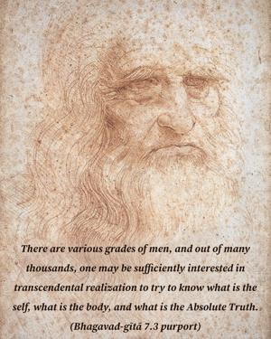

Out of many thousands among men, one may endeavor for perfection, and of those who have achieved perfection, hardly one knows Me in truth.

There are various grades of men, and out of many thousands, one may be sufficiently interested in transcendental realization to try to know what is the self, what is the body, and what is the Absolute Truth. Generally mankind is simply engaged in the animal propensities, namely eating, sleeping, defending and mating, and hardly anyone is interested in transcendental knowledge. The first six chapters of the Gītā are meant for those who are interested in transcendental knowledge, in understanding the self, the Superself and the process of realization by jñāna-yoga, dhyāna-yoga and discrimination of the self from matter. However, Kṛṣṇa can be known only by persons who are in Kṛṣṇa consciousness. Other transcendentalists may achieve impersonal Brahman realization, for this is easier than understanding Kṛṣṇa. Kṛṣṇa is the Supreme Person, but at the same time He is beyond the knowledge of Brahman and Paramātmā. The yogīs and jñānīs are confused in their attempts to understand Kṛṣṇa. Although the greatest of the impersonalists, Śrīpāda Śaṅkarācārya, has admitted in his Gītā commentary that Kṛṣṇa is the Supreme Personality of Godhead, his followers do not accept Kṛṣṇa as such, for it is very difficult to know Kṛṣṇa, even though one has transcendental realization of impersonal Brahman.
Kṛṣṇa is the Supreme Personality of Godhead, the cause of all causes, the primeval Lord Govinda. Īśvaraḥ paramaḥ kṛṣṇaḥ sac-cid-ānanda-vigrahaḥ/ anādir ādir govindaḥ sarva-kāraṇa-kāraṇam. It is very difficult for the nondevotees to know Him. Although nondevotees declare that the path of bhakti, or devotional service, is very easy, they cannot practice it. If the path of bhakti is so easy, as the nondevotee class of men proclaim, then why do they take up the difficult path? Actually the path of bhakti is not easy. The so-called path of bhakti practiced by unauthorized persons without knowledge of bhakti may be easy, but when it is practiced factually according to the rules and regulations, the speculative scholars and philosophers fall away from the path. Śrīla Rūpa Gosvāmī writes in his Bhakti-rasāmṛta-sindhu (1.2.101):
śruti-smṛti-purāṇādi-
pañcarātra-vidhiṁ vinā
aikāntikī harer bhaktir
utpātāyaiva kalpate
“Devotional service of the Lord that ignores the authorized Vedic literatures like the Upaniṣads, Purāṇas and Nārada Pañcarātra is simply an unnecessary disturbance in society.”
It is not possible for the Brahman-realized impersonalist or the Paramātmā-realized yogī to understand Kṛṣṇa the Supreme Personality of Godhead as the son of mother Yaśodā or the charioteer of Arjuna. Even the great demigods are sometimes confused about Kṛṣṇa (muhyanti yat sūrayaḥ). Māṁ tu veda na kaścana: “No one knows Me as I am,” the Lord says. And if one does know Him, then sa mahātmā su-durlabhaḥ: “Such a great soul is very rare.” Therefore unless one practices devotional service to the Lord, one cannot know Kṛṣṇa as He is (tattvataḥ), even though one is a great scholar or philosopher. Only the pure devotees can know something of the inconceivable transcendental qualities in Kṛṣṇa – His being the cause of all causes, His omnipotence and opulence, and His wealth, fame, strength, beauty, knowledge and renunciation – because Kṛṣṇa is benevolently inclined to His devotees. He is the last word in Brahman realization, and the devotees alone can realize Him as He is. Therefore it is said:
ataḥ śrī-kṛṣṇa-nāmādi
na bhaved grāhyam indriyaiḥ
sevonmukhe hi jihvādau
svayam eva sphuraty adaḥ
“No one can understand Kṛṣṇa as He is by the blunt material senses. But He reveals Himself to the devotees, being pleased with them for their transcendental loving service unto Him.” (Bhakti-rasāmṛta-sindhu 1.2.234)